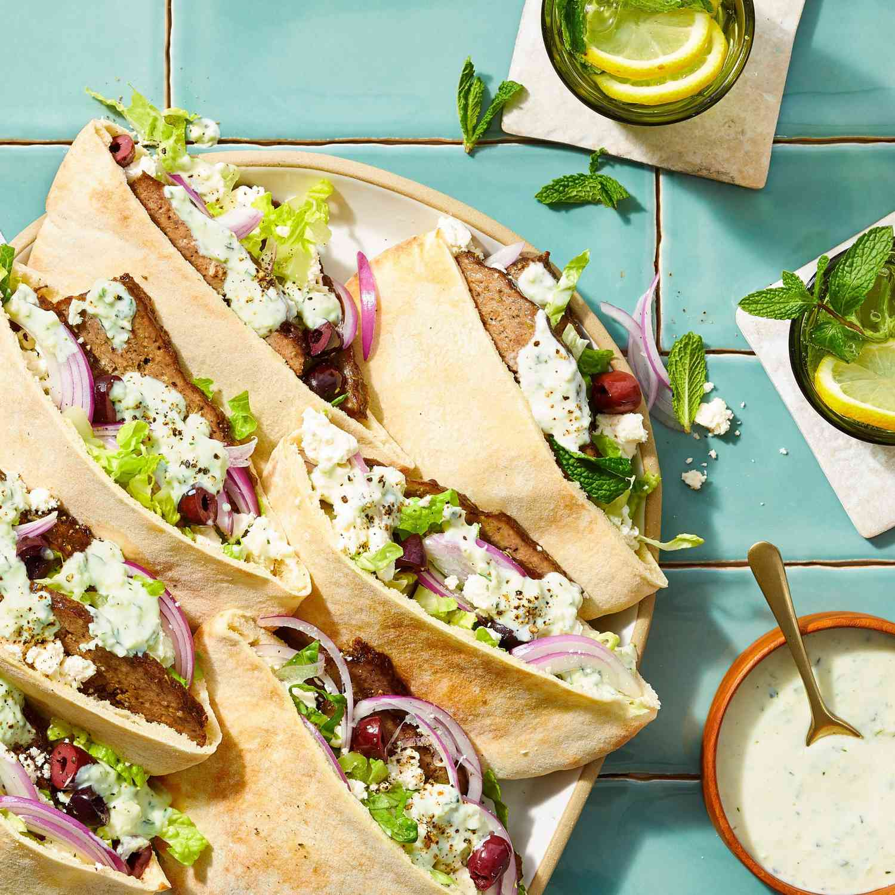

gyros

gyros
Gyro, a Greek dish of roasted meat served in a pita,
usually with tomato, onion, and tzatziki, a cold, creamy
sauce made from yogurt, cucumber, garlic, and various spices.
Gyro meat—typically lamb, beef, pork, or chicken—is roasted on a
vertical skewer and sliced off in thin, crispy shavings as it cooks.
The dish is popular around the world, and many variations exist.
Ingredients needed to make gyros
- ¼ cup chopped red onion
- 1 tablespoon minced garlic
- 1 tablespoon dried marjoram
- 1 tablespoon ground dried rosemary
- 2 teaspoons kosher salt
- ½ teaspoon freshly ground black pepper
- 1 pound 93%-lean ground beef
- 1 pound ground lamb
Directions
- Preheat oven to 350 degrees F (175 degrees C).
- Process red onion in a food processor until finely minced. Scoop onion into a piece of cheesecloth and squeeze it to release as much moisture as possible.
- Return onion to the food processor. Add garlic and process until the garlic is well integrated. Blend in marjoram, rosemary, salt, and pepper.
- Gradually blend ground beef and ground lamb with the onion and seasoning mixture by alternately adding small amounts of each meat to the mixture and processing until well incorporated before adding the next batch.
- Firmly pack the meat mixture into a 9x5-inch loaf pan, assuring no air pockets are trapped in the meat.
- Bake in the preheated oven until no longer pink in the center, about 1 hour 15 minutes. An instant-read thermometer inserted into the center should read at least 175 degrees F (80 degrees C).
- Drain grease and slice thinly to serve.